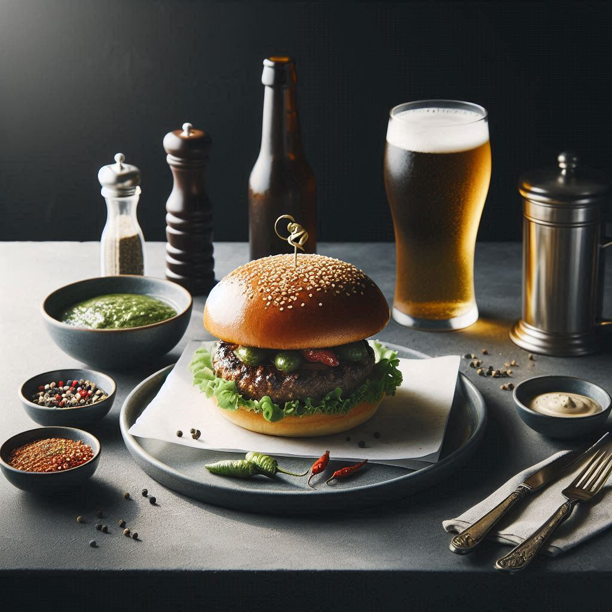
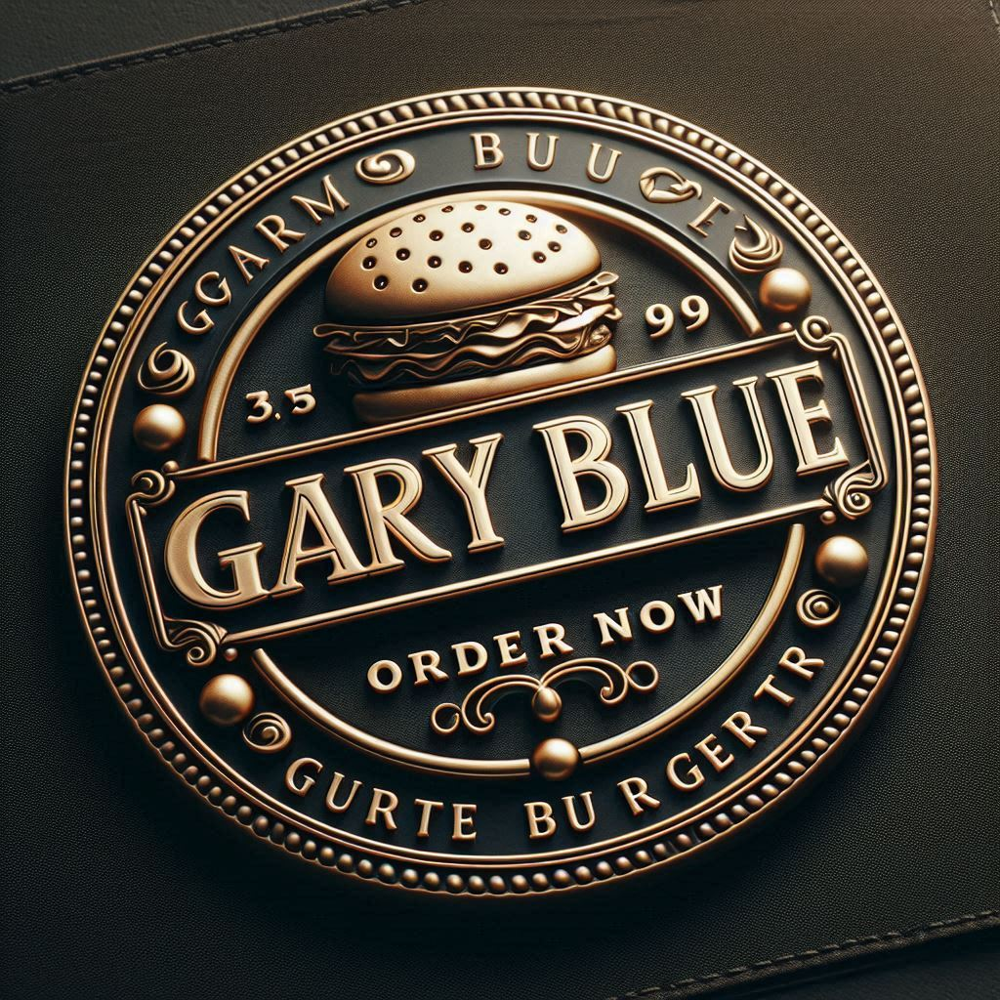
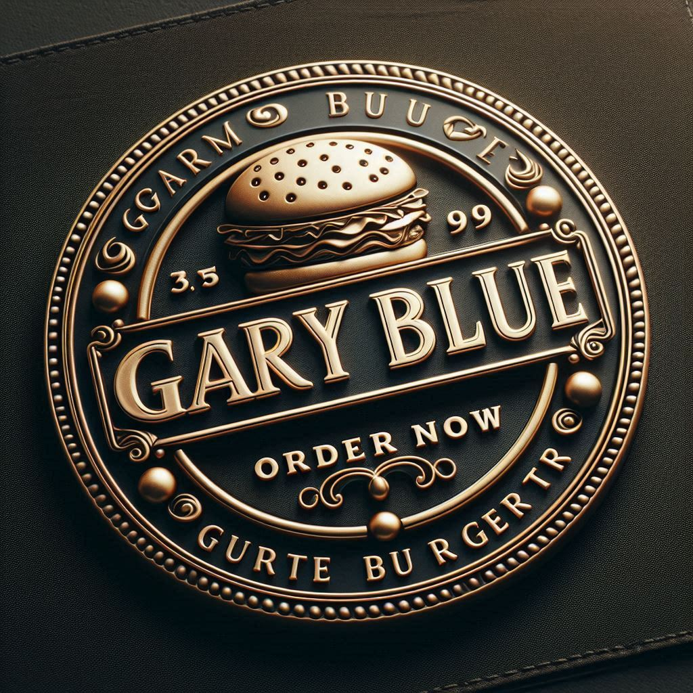

Indulge
Menu
At Gary Blue, each bite tells a story of culinary passion and innovation. Our menu is a celebration of gourmet burgers crafted with the freshest ingredients and a twist of creativity. From our classic favorites to unique seasonal specials, every dish is designed to tantalize your taste buds and keep you coming back for more. Dive into our recipes and discover the flavors that make Gary Blue a beloved gourmet haven.
View the full Menu
 
